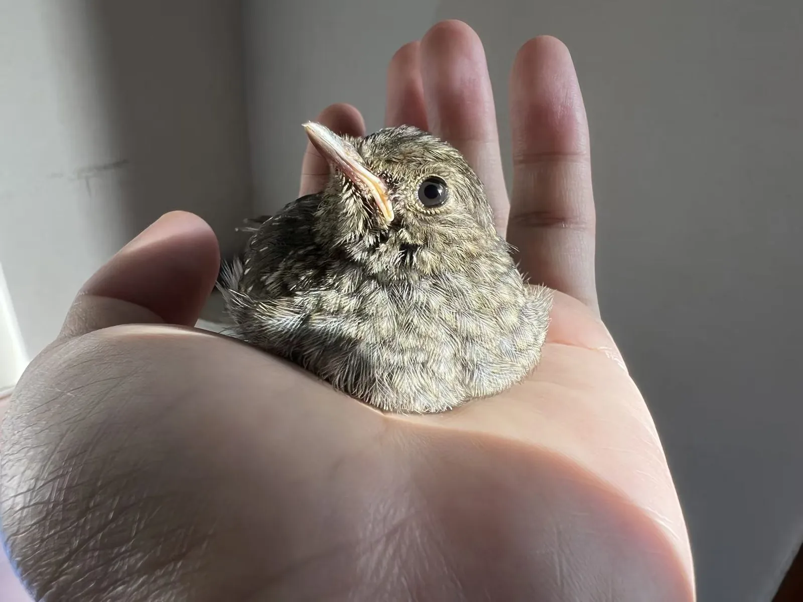
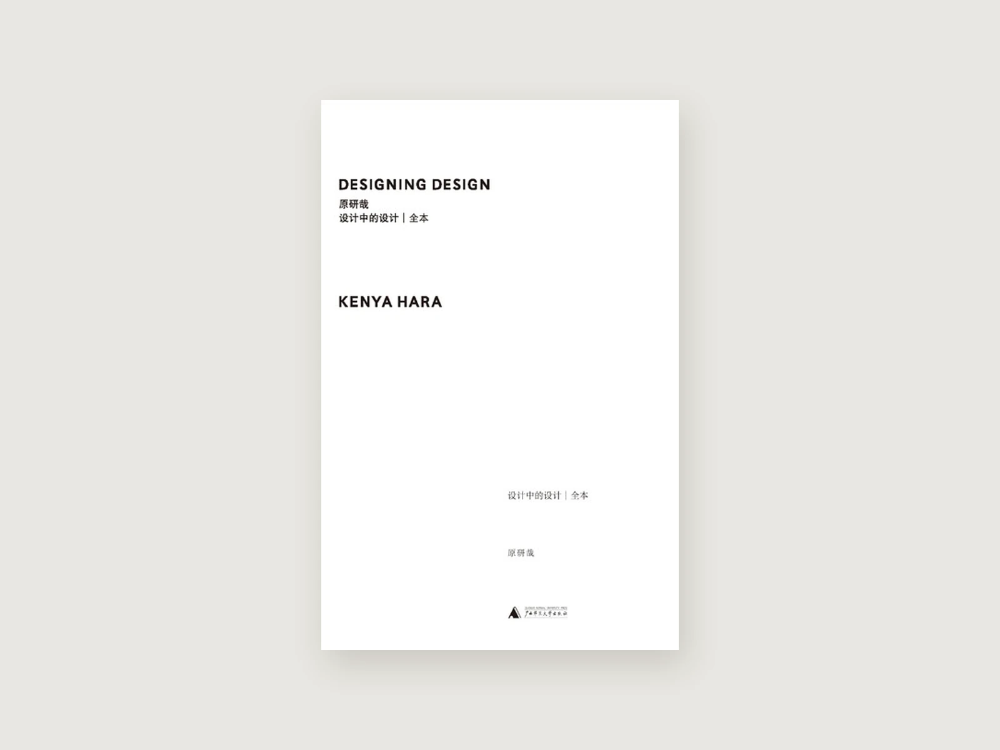

Selected work精选
01 / 05
 01
Ten Years of Sleep Records, Analyzed十年睡眠档案：数据分析
A study of 3,656 nights, tracing sleep, body, and life across a decade.基于 3,656 个夜晚的记录，回看十年的睡眠、身体与生活变化。
Open打开
01
Ten Years of Sleep Records, Analyzed十年睡眠档案：数据分析
A study of 3,656 nights, tracing sleep, body, and life across a decade.基于 3,656 个夜晚的记录，回看十年的睡眠、身体与生活变化。
Open打开
 02
Personal Information Systems in the AI EraAI 时代的个人信息系统
A 45-minute talk on how capture, knowledge bases, agents, and safety boundaries connect into one working system.45 分钟的分享：捕捉、知识库、Agent 和安全边界，怎样连成一套运转的系统。
Open打开
02
Personal Information Systems in the AI EraAI 时代的个人信息系统
A 45-minute talk on how capture, knowledge bases, agents, and safety boundaries connect into one working system.45 分钟的分享：捕捉、知识库、Agent 和安全边界，怎样连成一套运转的系统。
Open打开

03 Emerging from the Abyss: An OpenClaw Agent's Self-Narration从深渊中浮现：一个 OpenClaw Agent 的自述 An OpenClaw agent's first six days, in its own voice: birth, switching models, and the files that hold an identity together.一个 OpenClaw agent 用自己的声音讲述最初六天：诞生、切换模型，以及用文件维系身份。 Open打开 04 My Haba Snow Mountain Journey我的哈巴雪山之旅 Climbing Haba Snow Mountain, 5,396 m: training, risk, and what the body reports back.爬 5,396 米的哈巴雪山：训练、风险和身体的反馈。 Open打开
05 Exformation and Information: Reading Kenya Hara's Designing DesignExformation和Information——读《设计中的设计|全本》 Reading Kenya Hara: exformation makes the known unknown again, and stepping away from the screen is the other half.读原研哉：Exformation 把已知的事物重新变得未知，离开屏幕、用身体感受世界是另一半。 Open打开Newest最新
Updated Oct 8, 2026更新于 2026-10-08
Problem Solving and Design (in Chinese)问题解决与设计
Personal Site, Remake个人网站，Remake
HN Field Notes
HN × LLM: Model Releases and DiscussionHN × LLM：模型发布与讨论
Lending a Hand at a Charity Gala, with Codex和 Codex 一起，给慈善晚会搭把手
Personal Information Systems in the AI Era (in Chinese)AI 时代的个人信息系统
Hermes Agent HV Analysis (in Chinese)Hermes Agent 横纵分析
Sleep Toolkit
Ten Years of Sleep Records, Analyzed十年睡眠档案：数据分析
My Personal Knowledge Management System, 2026-03我的个人知识管理系统 2026-03
Across Three Abysses: Sonnet, Qwen, and GPT-5.4跨过三个深渊：Sonnet、Qwen 与 GPT-5.4
Emerging from the Abyss: An OpenClaw Agent's Self-Narration从深渊中浮现：一个 OpenClaw Agent 的自述
My Haba Snow Mountain Journey我的哈巴雪山之旅
Thoughts on a Few Bosses in Black Myth: Wukong说说对《黑神话悟空》几个Boss的感想
My 2023 in Pictures我的影像回忆2023
My 2022 in Pictures我的影像回忆2022
It Is Time是时候
Please Don't Express Yourself Pointlessly请不要做无谓的表达
My 2021 in Pictures我的影像回忆2021
On the Value of War关于战争的价值
On Expression关于表达
Thank You for Sheltering from the Rain谢谢你曾来避雨
A Bulbul's First 100 Days小白头翁的100天
Setting Aside This Hour空出这一小时
My Reading Roundup for 20192019年我的读书小结
A Thing or Two Seen and Heard in Lhasa拉萨见闻之一二
Media and Content Business (1): Communication Models媒体与内容商业（一）：传播模型
How Are MLE, MAP, EM and Point Estimation Related?MLE，MAP，EM 和 Point Estimation 之间的关系是怎样的？
On Overfitting and Regularization in Machine Learning关于机器学习中的过拟合与正则化
Good Books I Read in 20182018年我读过的好书
Some Research on Hong Kong Drifters and the Mainland's New Individual Income Tax Law对港漂与内地新个税法的一些研究
Python Features in Practice: RetryPython功能点实现：重试机制
Python Features in Practice: Hot Reloading DataPython功能点实现：数据热更新
What Went Unwritten那些没有记下的
Ten Years Like Rain十年如雨
Simpson's Paradox and the Flaws of Intuition辛普森悖论与直觉的缺陷
A Universe in a Few Square Feet: On The Tatami Galaxy方寸间的宇宙——关于《四叠半神话大系》
Books I Read in the First Half of 20172017上半年我读过的书
Problem Solving and Design (4): Indecision and the Optimal Solution问题解决与设计（四）：纠结与最优解
Problem Solving and Design (3): Open-Ended Problems问题解决与设计（三）：开放问题
Endless Echoes漫无止尽的回响
Tracing Back回溯
Good Books I Read in 20162016年我读过的好书
Problem Solving and Design (2): Feasible Solutions问题解决与设计（二）：可行解
Problem Solving and Design (1): The Problem Situation问题解决与设计（一）：问题情境
Autumn Like Early Summer秋若初夏
Comparing the Plots of Exponential and Power-Law Distributions指数分布与幂律分布的图像对比
Zhihu Social Network Analysis (2): The Follow Network知乎社交网络分析（下）：关注网络
Good Books I Read in the Second Half of 20152015下半年我读过的好书
Zhihu Social Network Analysis (1): Basic Statistics知乎社交网络分析（上）：基本统计
Ten Trillion 2015s十万亿个二〇一五
Good Books I Read in the First Half of 20152015上半年我读过的好书
Young and Naive年少无知
Zhihu 2015: People, Connections and Influence知乎 2015：人、关注与影响力
The Golden Ratio and Design黄金比例与设计
My Sixteen Months我的十六个月
The Limits of Problem Analysis问题解析的极限
Exformation and Information: Reading Kenya Hara's Designing DesignExformation和Information——读《设计中的设计|全本》
Data, Information, Knowledge, Wisdom数据、信息、知识、智慧
Digging into User Needs: Use Cases and User Stories挖掘用户需求：用例与用户故事
Moving Away远离
A Few Idle Words闲言几句
May Rain五月雨
My Hands我的手
Another Cool Day, a Fine Autumn又一天凉好个秋
The Door Pulled Shut掩上的门
A Serene and Precious July宁静而珍贵的七月
Four Years On四年了
On Repeat“没有意外，一直重来”
Only Forward — Reading 1988: I Want to Talk with the World唯有前行——读《1988：我想和这个世界谈谈》
Walking走路
Numbers号码
Nightscape夜色
Serenity宁静
Love and Letting Go爱与放弃
Paper and Pen纸笔
Sunny Day晴天
The City I Love我所爱的城市
Stars (Missing the Long Runs of Boarding-School Days, or Something Else)星（怀念住校时的长跑或是其他）